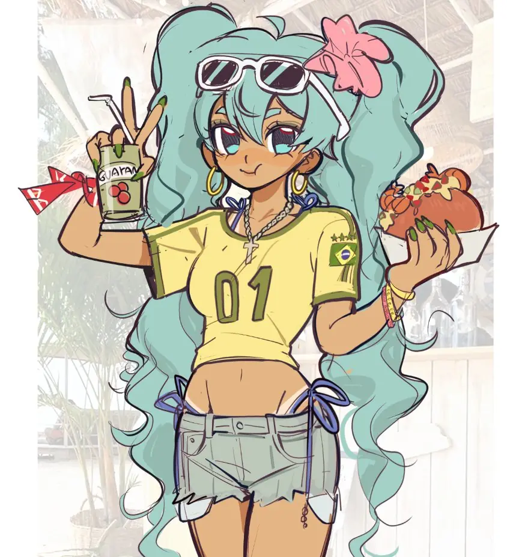
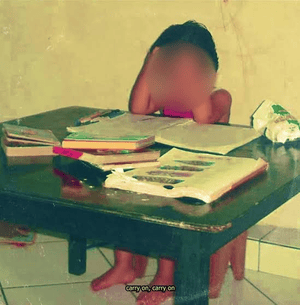

A Miku brasileira nasceu originalmente como um desenho feito por Erin no X (antigo Twitter) em junho do ano passado.
Em agosto, quando Doodly fez sua própria versão da Miku brasileira usando o desenho de Erin como referência, a personagem acabou se tornando um sucesso mundial e conquistou a internet por meses.

E logo após isso, sua fama só escalou mais ainda depois da crianção da música “Himitsu da yo”, feita pelo Tuzera em 2024, desde o seu lançamento, a música teve mais de 700.000 visualizações no YouTube.
Além da música “Mãos para cima”, feita pelo Mellowcle em 2025, que atualmente está com 3,9 Milhões de visualizações.